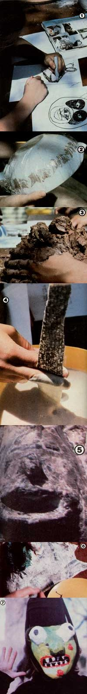

Your whole family can have a lot of fun constructing your own ghastly, horrifying, hair-raising, goose-pimpling, and easy-to-make...
Begone, catalog costumes ... Away, discount store superheroes . . . Out, out, Halloween sewing machine blues!
That's right, you don't need to purchase commercial costumes (or put in hours sitting at a sewing machine) to outfit your children !n Halloween regalia, because-by spending some enjoyable, creative time together- you and your youngsters can create papiermache goon, witch, and monster masks so terrifying that the homemade disguises will surely satisfy the timeless roaming spirits of Allhallows' Eve ... and your own trick-or-treaters as well!
Before you can begin making the demons, though, you have to find a "secret" (that is, mess-tolerant) work spot and assemble some necessary supplies. You'll need paper and pencils ... a face-sized bowl for each youngster ... potter's or earth-dug clay . . . plastic wrap . . . newspapers . . . flour, water, and a large mixing container . . . a board (or stiff cardboard) work surface for each mask . . . scissors . . . acrylic paints . . . and some half-inch-wide elastic. (Books about trolls or animals are also useful resources, since the illustrations in such volumes can often help turn reluctant young artists into selfmotivated frenzies of invention.)
Our own maskmaking gang includes my children-John, Pedro, Julie, and Melissa-as well as their technical assistant, my husband Todd. We usually congregate around the outdoor picnic table and plunge right into the task of sketching the mask designs. Oh, there's always at least one child who feels that he or she will "never think of anything to make" (the rest are absolutely exploding with ideas), but before long every youth is eagerly offering suggestions, combining efforts, and asking weird questions:
"Would three eyes look good, Dad?".. . "How about a nice juicy wart on my witch's loooong chin?" ... "Should my mask be blue with a red nose?" (My husband and I, of course, encourage all such original thinking.)
After a considerable amount of brainstorming and drawing, every child has produced a good ghoulish sketch and is ready to start creating a mask mold. And while it's true that an upside-down oval bowl covered with plastic wrap can serve perfectly well as a mold all by itself, we've found that maskmaking is easier-and a heck of a lot more fun-if we shape clay over the containers and build the monster faces we want.
Once the children have formed cheeks, noses, mouths, chins, and eyes on their upturned bowls . . . we let the earthen material dry long enough to become firm. Then each person covers his or her mold with a close-fitting skin of plastic wrap . . . to ensure that the finished masks won't stick to the clay.
Next, part of the work crew mixes up a batch of flour and water paste (for the soon-to-be-used papier-mache strips) by half-filling a large container with water and working flour into the liquid until the resulting glop obtains the consistency of cream soup. Meanwhile, other workers prepare a large basketload of torn strips of newspaper, 3/4" to 1 "wide.
Soon it's time to construct the actual masks. For this task, each youngster simply dips strips of paper-one at a time-in the flour/water soup, pulls each piece between two fingers to wipe off any excess goo, and then bravely lays the saturated newsprint on his or her clay form . . . making sure that the wet paper conforms as closely as possible to the mold.
We've found that six to ten layers of papier-mache will make a sturdy-yet lightweight-mask, and that the finished face will be stronger still if the separate layers are smoothed on in different directions . . . and!f a few extra strips are laid around the outer edge. (We paper right over all the apertures, since we can easily cut any necessary openings later.)
After the molds are completely covered, the Halloween faces are set out in the sun to dry. On a bright day the outside of the masks will harden within two to four hours, and they can be slipped off their molds. (Be sure that you treat projections-such as hooked noses-with care during this "peeling" process.) Then we remove the plastic wrap film from the inner surfaces and set the masterpieces back outdoors, so they can finish drying all the way through. (At this point, we often stop work until the next morning . .. but if you're in a hurry, you can complete the entire project in one day.)
Our next step is to trim the edges of each mask, and to cut out the "breathing and talking" openings. (We also cut out "looking" holes, but-since youngsters' faces are usually smaller than the visages they create-these peekholes and the mask's eyes rarely match.) We then smooth any rough corners or edges that have been caused by our slicing work, using a bit of sandpaper.
Now comes the vital face-painting stage . . . the point at which the horrifying countenance-covers are almost ready to vi brate into life. All the children put a lot of care into the decorating work, since a creative use of bright, contrasting colors can transform a seemingly mediocre goblin into a ghoulish fantasy that will surely delight the most particular Halloweener.
Finally, each child attaches some elastic to hold the disguise on his or her head, dons any suitable scrap of clothing (the finished creations are so marvelous that costumes are almost superfluous), and becomes a new self!
And that's all there is to it. But beware: If you and your family try making your own papier-mache Halloween masks this year, you may well find your youngsters armed with creations so terrifying that the Druids themselves will spin in their graves!
|
 [1] Maskmakers first draw rough sketches of their proposed creations. [2] Next, each youngster covers a bowl with plastic wrap... and [3] sculpts a mold in clay for the funny face. [4] After the clay has dried, strips of newspaper are dipped in a flour/water paste and applied to the form. Six layers will produce a light-weight, durable masks. [5] The paper ""sculpture"" is set aside to dry. [6] Garish paints breathe life into a faceless demon. [7] A pint-size horrifier... ready to stalk the night. |
|
|